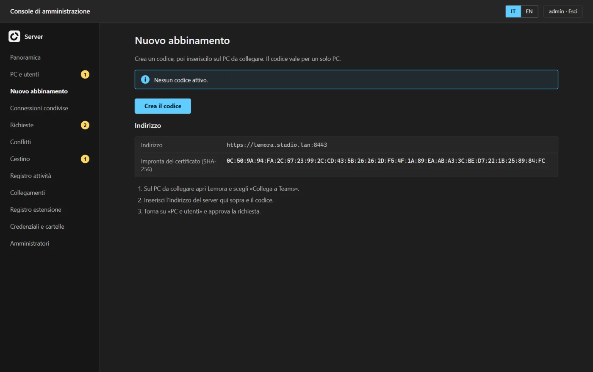
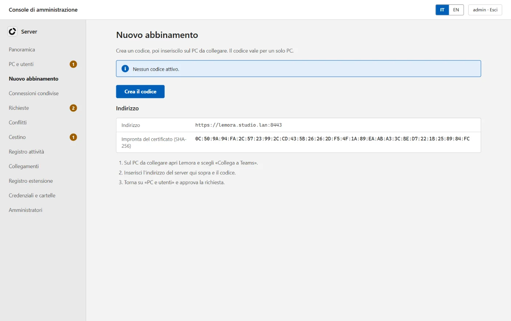
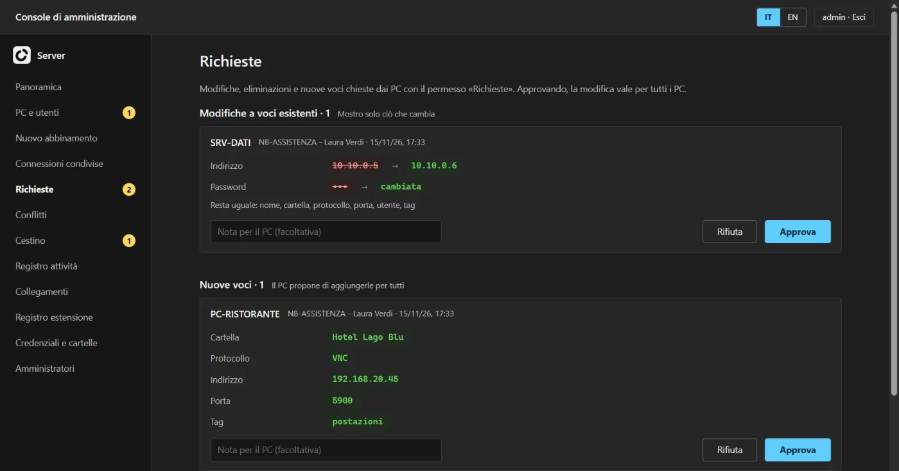
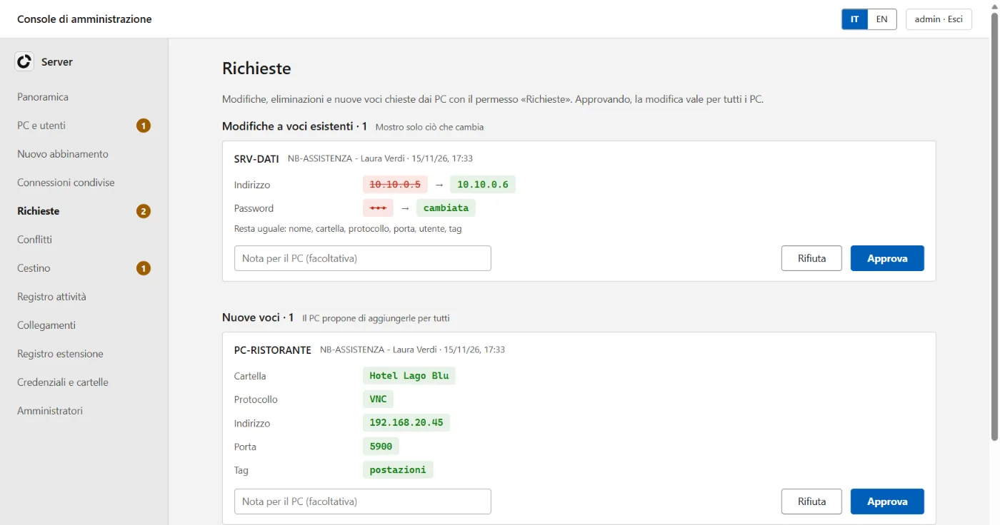
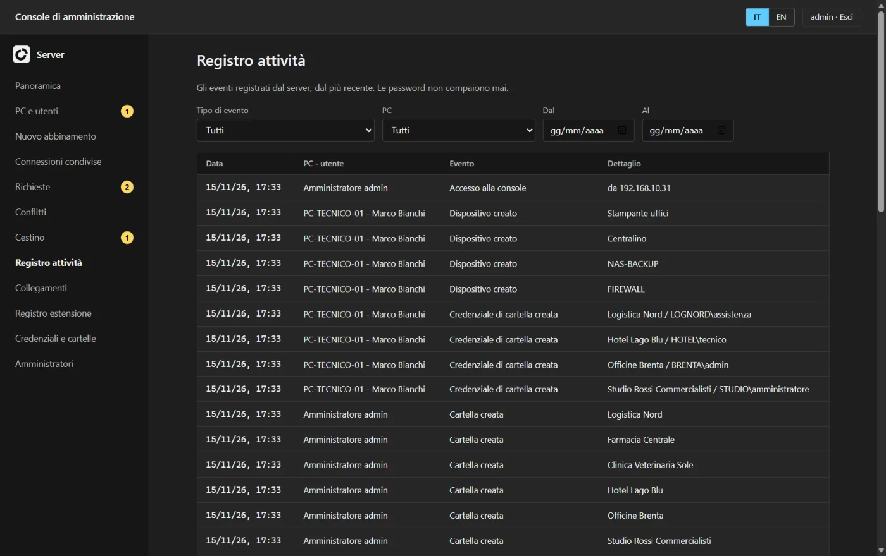
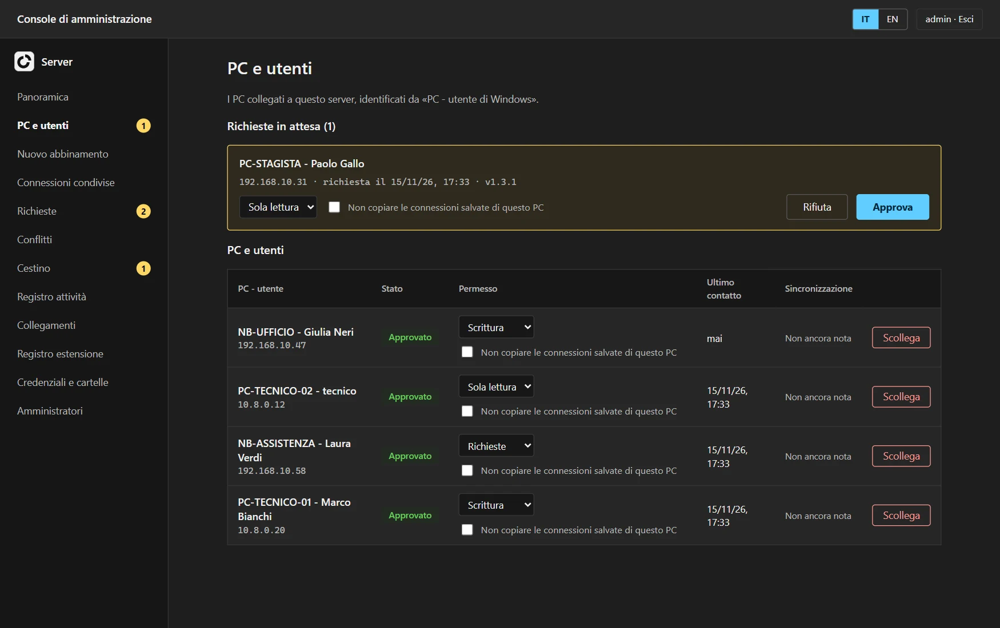
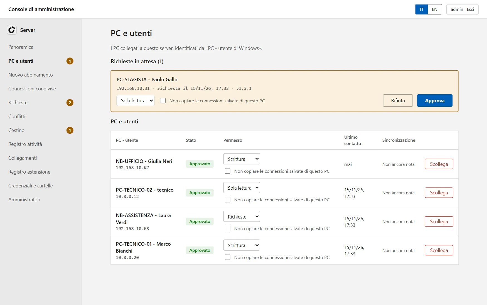
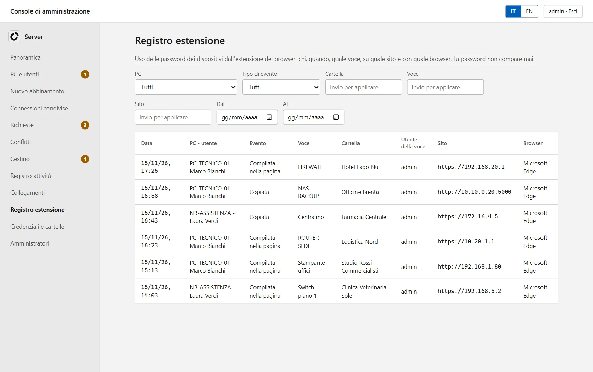

- Lemora
- For business
Lemora Server, on the company network
A service for Windows or Linux that shares folders, connections, credentials and device passwords among the team's PCs. Each PC must be approved; every change and every session is recorded in the log. No external server.
- Server
- .NET 10 · SQLite · web console
- Systems
- Windows x64 · Linux x64
- Network
- HTTPS · port 25353
- Price
- free
Where the data goes
The server holds the shared vault. RDP, VNC and SSH sessions go from the technicians' PCs to the clients' PCs: they do not pass through the server.
Installation
Run once, the server installs itself as a service and stays active across restarts.
-
Service. On Windows it runs under the LocalService account, with a firewall rule limited to private networks. On Linux it becomes a systemd service with a dynamic user; ufw or firewalld are configured accordingly. The terminal shows a one-time setup code.
$ sudo ./Lemora.Server # installs the service and prints the setup code
-
Web console. From the browser, at the server address: setup code, first administrator, settings. Everything else is managed from here.
https://192.168.10.20:25353 -
Team PCs. Lemora in Teams mode asks for a 6-character pairing code, valid for 30 minutes and usable once. The administrator approves the PC from the console and chooses the permission.
Try it · Console › New pairing
······
Expires in 30:00 · works for one PC only
Try it · PC-STAGISTA › Connect to Teams
Serverhttps://lemora.studio.lan:25353


Uninstalling removes the service, the firewall rule, data and database: Lemora.Server --uninstall --purge.
PCs and permissions
The identity is the pair of PC and Windows user. The permission covers the whole shared vault of that PC and is changed or revoked from the console at any time.
| Permission | Connections | Credentials and devices |
|---|---|---|
| Read-only | Opens them, does not edit them | Uses and copies them, does not edit them |
| Requests | Each change becomes a request to approve | Same as connections |
| Write | Creates, edits, deletes | Creates, edits, deletes |
- Revocation
- At the first contact after revocation the PC deletes its copy of the shared entries; if it stays offline, the copy is locked as described in A.4.
- Administrators
- Several console administrators, with the same powers. The main one and the last remaining one cannot be deleted. After 5 failed logins the console locks for 5 minutes; a session lasts 8 hours.
- admin changed the permissionPC-GIULIA · giulia
- admin approved the PCPC-GIULIA · giulia

Sharing and offline work
Each PC keeps an encrypted copy of the shared vault and also works with the server off or away from the office.
- What is shared
- RDP, SSH and VNC connections; the folder tree, empty folders included, with domain and prefix; folder credentials; device passwords.
- Sync
- Every 20 minutes, or immediately with "Sync now".
- Without the server
- After 7 days without contact the shared entries are locked on the PC. They unlock at the next sync.
- Sync turned off
- A PC can turn it off; the console shows and logs it.
- Personal connections
- They stay only on the PC until the technician proposes them to the server.
Requests, proposals and conflicts
- Requests
- Changes from PCs with the Requests permission wait on the console page of the same name: approved or rejected, with who and when.
- Proposals
- A personal connection proposed to the server becomes shared after approval. The console flags duplicates.
- Conflicts
- If two PCs edit the same entry, the server's version wins; the other is kept for comparison: "Keep server version" or "Use PC version".
- Recycle bin
- Deleted entries are kept with author and date and can be restored. "Delete permanently" removes the secrets and keeps the record.


Activity log
About forty event types, filterable by type, PC and date. The log contains the action, never the value of a password.
- Pairing: code created, request, approval, rejection, disconnection.
- Shared entries: creation, edit, deactivation, deletion, restore, permanent deletion.
- Folders, folder credentials and devices: created, edited, renamed, deleted.
- Requests, proposals and conflicts, with the decision.
- Password shown in the console; user, password or address copied from the Passwords tab.
- Administrators created or deleted.


Connection history
Every RDP, SSH or VNC session opened by a team PC, including those to personal connections or unsaved addresses.
| PC | Entry | Protocol | Start | Duration |
|---|---|---|---|---|
| PC-GIULIA · giulia | FS-01 · Officine Brenta | RDP | 09:02 | in progress |
| PC-MARCO · marco | Firewall · Officine Brenta | SSH | 08:51 | 6 min |
| PC-MARCO · marco | 10.30.1.15 · quick connection | VNC | 08:20 | 24 min |
| PORTATILE-STAGE · luca | PC-Reception · Studio Rossi | VNC | 08:05 | interrupted |
Filters by PC, text and date, pages of 100 rows. The history records name, address and folder; never credentials.


Extension log
With Teams, every use of the browser extension reaches the server: fill-in, copy, save, edit, deletion.




- 1PC awaiting approval
- 2PC permission
- 3Extension log
For each event: PC and user, time, entry, folder, entry user, browser and site reduced to https://host:port, without the path.
Requirements, network and backup
- System
- Windows x64 or Linux x64; it also runs on Raspberry Pi (Linux ARM64).
- File
- Lemora.Server, single file of about 100 MB with .NET included: no prerequisites to install.
- Database
- SQLite (server.db)
- Network
- HTTPS on port 25353, changeable with
--port. Accepts only private network addresses. - Certificate
- Self-signed, created on first start, valid for 10 years.
- Backup
- Just copy the data folder, including
server.key: the key that opens the saved passwords.
What is encrypted in the server database and what is not: Security, S.5
Lemora and the NIS2 directive
Article 21 of the NIS2 directive lists the security measures that essential and important entities must adopt. For remote access to customer and company systems, Lemora covers a concrete part of some of these measures.
| Measure | What Lemora does | Where |
|---|---|---|
| Access control, point i | Only PCs approved with a pairing code see the shared entries. Each PC has a permission (read-only, requests, write) that is changed or revoked from the console; on revocation the PC deletes its copy. | A.3 |
| Asset management, point i | Connections, credentials and device passwords organised by customer and site, in a single vault instead of scattered files and spreadsheets. | A.4 |
| Traceability and incident handling, point b | The activity log shows who changed what and when; the history shows who connected to which server and for how long. This is the data needed to reconstruct an incident. | A.6, A.7 |
| Cryptography, point h | Vault encrypted with AES-256-GCM on the PC and on the server, connection to the server over TLS with certificate fingerprint check, updates signed with ECDSA. | Security |
| Authentication, point j | Unlock with master password or Windows Hello; verification before showing or copying a password. Console locked after 5 wrong logins, 8-hour session. | Security, S.3, A.3 |
| Cyber hygiene, point g | Passwords copied to the clipboard without Windows history and cleared after 30 seconds; the extension fills in only on click and only on pages with the device's address. | A.8 |
| Supply chain, point d | The server runs on the company's own hardware, Windows or Linux: no data on third-party cloud services. | A.2 |
Lemora is not a certified product, and using it does not on its own make an organisation NIS2 compliant. Risk analysis, incident notification, business continuity, staff training and the other measures of the directive remain the organisation's responsibility, with the tools and procedures it chooses.